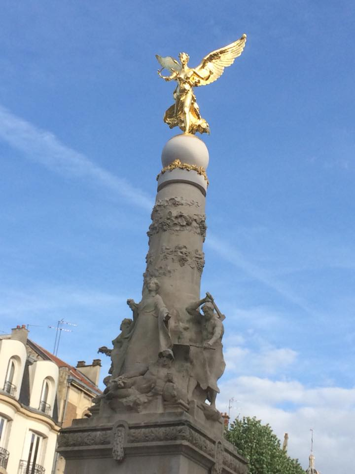

This is, in fact, the Subé Fountain. Inaugurated in 1906, and having at its centre a crowned woman draped in cloth, it is a lasting symbol of Reims. Its construction required the removal of the statue of Marshall Drouet d’Erlon whose name was then attributed to the square. The fountain is named after Auguste Subé who donated 200,000 gold franks to the city to erect the monument. (See, money could buy you immortality - even back then).
Local rivers as well as the economic activities that have made Reims a prosperous city - agriculture, wine, trade and industry - are visible on the fountain’s base.